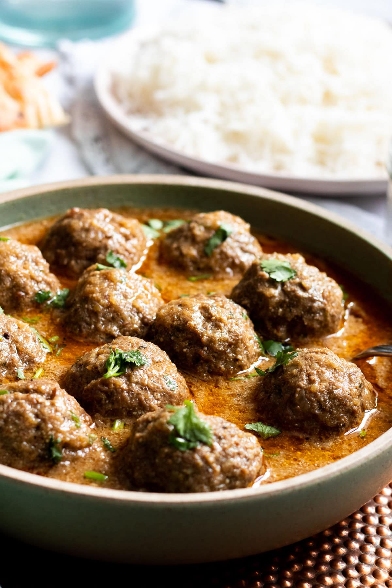
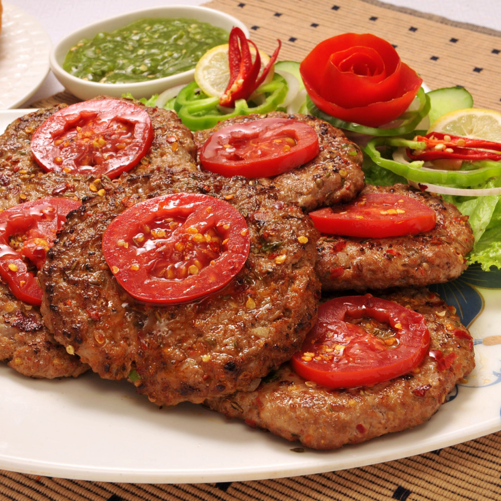

Other Food Recipes in Pakistan
Pakistan is known for its rich and diverse culinary heritage, offering a wide array of delicious dishes that reflect the country's cultural diversity. Some popular food recipes in Pakistan include:
Haleem

A traditional dish made with wheat, lentils, and meat, slow-cooked to perfection.
Kofty

Delicious meatballs, often served with a rich gravy or in a biryani.
Nihari

A hearty stew made with slow-cooked meat and a flavorful sauce.
Chapli Kebab

A spicy and flavorful kebab made with minced meat and a blend of spices.